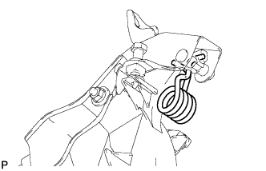
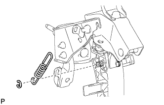
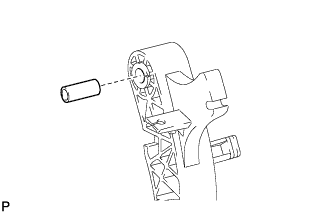
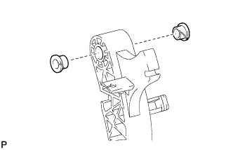
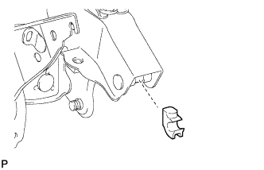

CLUTCH PEDAL (for RHD) > REMOVAL |
| 1. REMOVE CLUTCH MASTER CYLINDER ASSEMBLY |
Remove the clutch master cylinder assembly (Click here).
| 2. REMOVE CLUTCH PEDAL BRACKET SUB-ASSEMBLY |
Disconnect the clutch start switch connector.
w/ Cruise Control System:
Disconnect the clutch switch connector.
 |
Remove the bolt and clutch pedal bracket.
| 3. REMOVE TURNOVER SPRING |
 |
Move the pedal to the full stroke position.
Remove the turnover spring.
| 4. REMOVE CLUTCH PEDAL SPRING |
 |
Remove the E-ring and spring.
| 5. REMOVE CLUTCH PEDAL SUB-ASSEMBLY |
 |
Remove the nut, washer and bolt.
Remove the clutch pedal from the clutch pedal bracket.
| 6. REMOVE CLUTCH PEDAL PAD |
Remove the clutch pedal pad from the clutch pedal.
| 7. REMOVE NO. 2 CLUTCH PEDAL CUSHION |
 |
Remove the clutch pedal cushion from the clutch pedal.
| 8. REMOVE CLUTCH PEDAL SHAFT COLLAR |
 |
Remove the clutch pedal shaft collar from the clutch pedal.
| 9. REMOVE CLUTCH PEDAL BUSH |
 |
Remove the 2 bushes from the clutch pedal.
| 10. REMOVE CLUTCH PEDAL SPRING HOLDER |
 |
Remove the clutch pedal spring holder from the clutch pedal bracket.